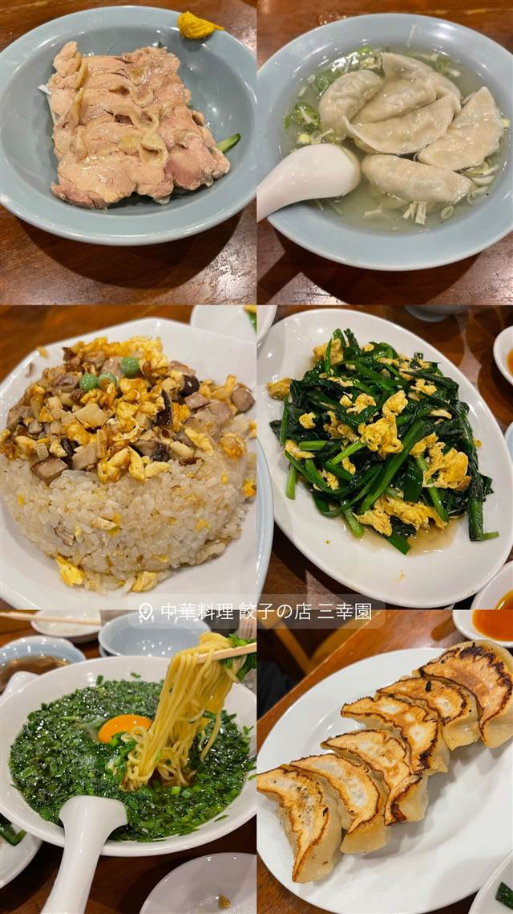

中華料理 餃子の店 三幸園 白山通り店
1956年創業、職人が一つひとつ手作業で包む焼き餃子
中華料理 餃子の店 三幸園
1956年創業、神保町交差点近くの老舗町中華。手作業で一つひとつ包む餃子が看板メニューで、食べログ『餃子百名店』にも選ばれ、創業以来変わらぬ味を守り続けている。
TRIVIA
へえ、という話
- 1956年の創業以来変わらぬ味を守り、4世代にわたり通う客もいるという
REVIEWS
みんなの声
3.49食べログ
「焼き餃子の皮と餡のバランス」に注目
- パリッとした皮とジューシーな餡のバランスを評価する声が多い
- 長年値上げを抑えた価格の良心的さを評価する声が多い
- 開店前から行列ができ待ち時間が長いという声が多い
食べログ 口コミ2450件
| 創業 | 1956年創業 |
|---|---|
| 看板 | 焼き餃子 |
| こだわり | 手作業にこだわり、職人が一つひとつ丹精込めて包む餃子。野菜と肉の旨みが混ざり合う餡が特徴 |
| 掲載・受賞 | 食べログ『餃子百名店』選出 |
| 予算 | 夜 ¥1,000～¥1,999 |
| 定休日 | 土曜・祝日 |
| 場所 | 神保町 東京都千代田区神田神保町（神保町駅A7出口徒歩1分） |
| 注意 | 神保町交差点近く、平日は深夜2時近くまで営業する町中華 |
食べたもの：餃子と炒飯
NEARBY
近い店・同じ系統の店
-
 ★9
二郎系(直系) 神保町
ラーメン二郎 神田神保町店
三田本店直系の乳化系濃厚豚骨醤油が自慢の二郎ラーメン
昼 ¥1,000～¥1,999
★9
二郎系(直系) 神保町
ラーメン二郎 神田神保町店
三田本店直系の乳化系濃厚豚骨醤油が自慢の二郎ラーメン
昼 ¥1,000～¥1,999
-
 ★33
つけ麺 神保町駅
つけそば 神田勝本
銀座の一つ星フレンチシェフが手がける清湯つけそば
昼 ～¥999
★33
つけ麺 神保町駅
つけそば 神田勝本
銀座の一つ星フレンチシェフが手がける清湯つけそば
昼 ～¥999
-
 欧風カレー 神保町駅
ガヴィアル
継ぎ足す秘伝ソースに28種のスパイス、百名店の欧風カレー
昼 ¥1,000～¥1,999 夜 ¥1,000～¥1,999
欧風カレー 神保町駅
ガヴィアル
継ぎ足す秘伝ソースに28種のスパイス、百名店の欧風カレー
昼 ¥1,000～¥1,999 夜 ¥1,000～¥1,999
-
 カレー 神保町駅
スマトラカレー 共栄堂
小麦粉不使用、スパイスだけでとろみを出す大正生まれのカレー
昼 ¥1,000～¥1,999 夜 ¥1,000～¥1,999
カレー 神保町駅
スマトラカレー 共栄堂
小麦粉不使用、スパイスだけでとろみを出す大正生まれのカレー
昼 ¥1,000～¥1,999 夜 ¥1,000～¥1,999
-
 ベーカリー 神保町駅
東京メロンパン 神保町靖国通り店
靖国通り沿いで実演販売する焼きたてメロンパン
昼 ～¥999 夜 ～¥999
ベーカリー 神保町駅
東京メロンパン 神保町靖国通り店
靖国通り沿いで実演販売する焼きたてメロンパン
昼 ～¥999 夜 ～¥999
-
 担々麺・辛い 神保町
成都正宗担々麺 つじ田（小川町店）
しびれの成都式とごまの正宗式、食べ比べできる担々麺
昼 ～¥999 夜 ～¥999
担々麺・辛い 神保町
成都正宗担々麺 つじ田（小川町店）
しびれの成都式とごまの正宗式、食べ比べできる担々麺
昼 ～¥999 夜 ～¥999